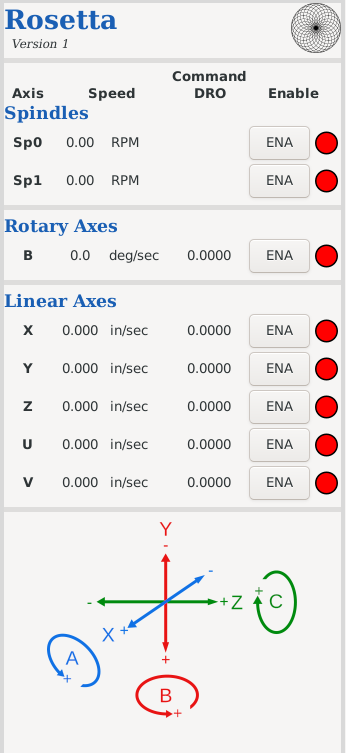

Side Panel
The side panel is used to show axis information, and to enable or disable any axis.
Axis Speed
This is the current speed of each axis. It only changes from 0 if the axis is being moved.
Positive values are movement in the positive direction for that axis; negative values are movement in the negative direction for that axis.
Notes:
- This value does not reflect any speeds set using other menus or Gcode (i.e., the S command); it shows the actual speed when running.
- The value shown reflects the settings for the axis in the configuration. For example, if it is set so that 4 revolutions of the linear slide moves it 1 inch, then each revolution will show 0.250” of movement.
If your device should have this set to 3 revolutions per 1 inch, you will need to make a change to the SCALE and STEP_SCALE parameters in the respective axis file found in the directory.
Directions for updating the axis file.
Command DRO
This is the distance commanded for the axis to move by LinuxCNC.
Notes:
Do note that this may not always be correct or match up with your real-world experiences.
- If the axis is moved manually (when it is disabled), this does not reflect that.
- Also, there is no feedback on the movement. If some issue is encountered (e.g., the motor gets jammed), this will not reflect the current state.
- As noted in item #3 above, this is based on the SCALE and STEP_SCALE parameters in the axis’ file.
Directions for updating the axis file.
Enable Status
The ENA button is used to enable or disable any axis.
Each axis’ status is indicated with lights shown to the right of the respective axis.
|
|
|
Axis is disabled
|
|
|
Axis is enabled
|
Notes:
- Attempting to run an axis when it is not enabled will generate and error message and move the machine to an “off” state (F2 can be used to toggle the machine back on).